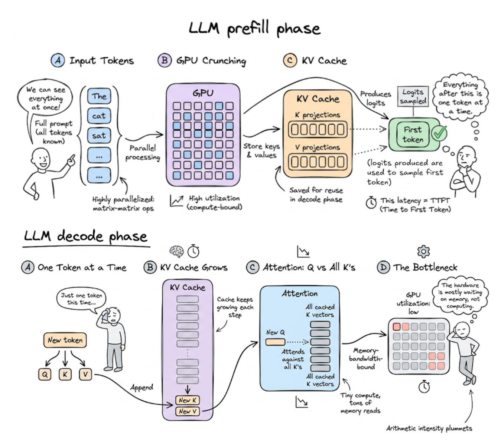
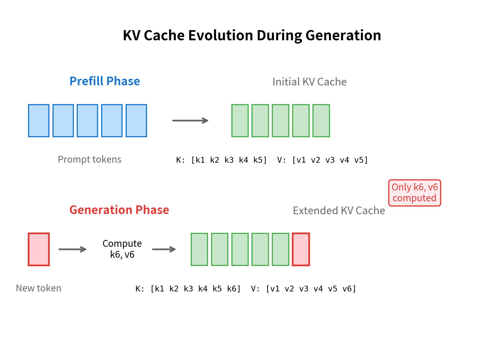
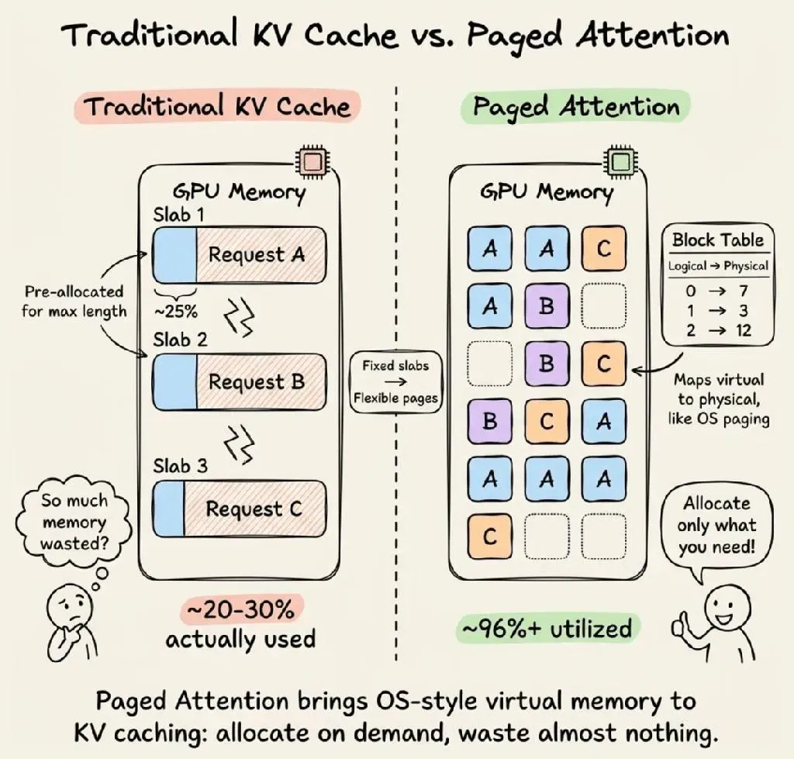
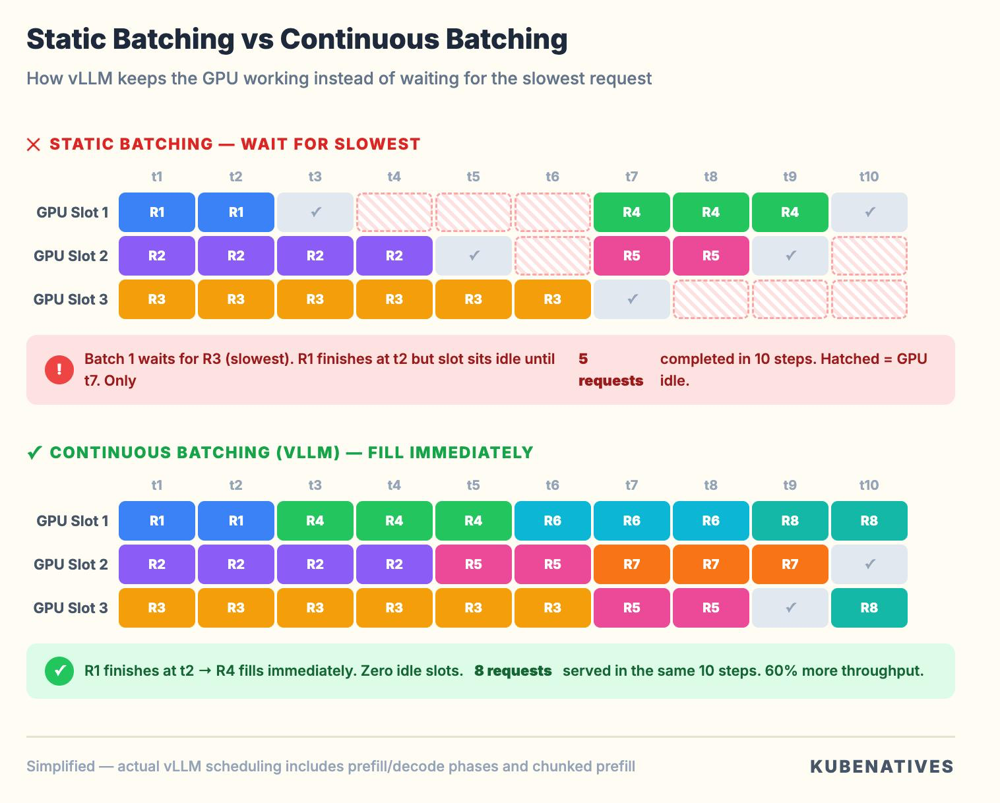
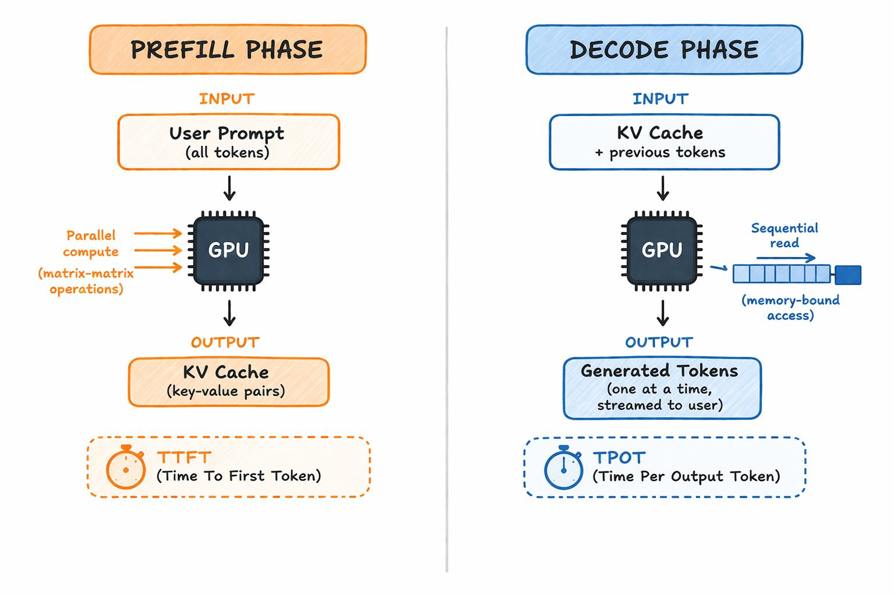
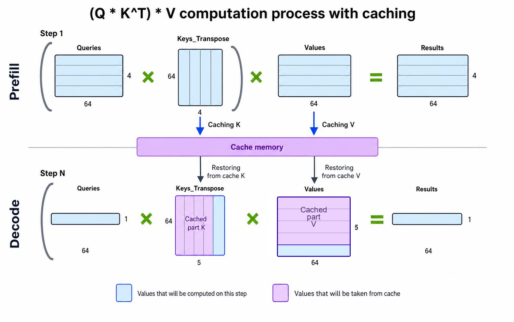
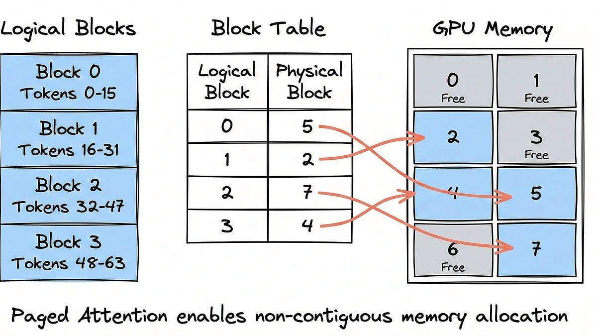
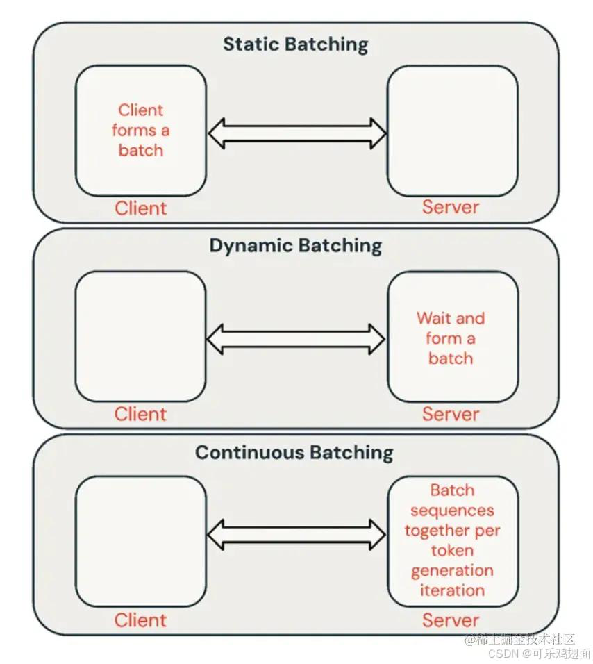
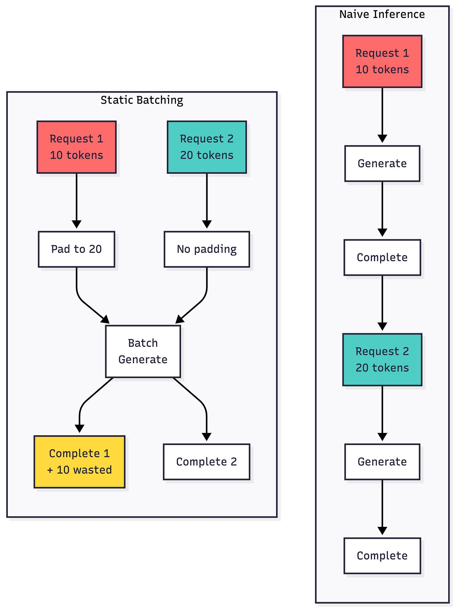

Day 1 of my series on LLM inference optimization. By Yuvraj Singh Bhadoria.
This is the part of AI engineering that is badly understaffed and, in my opinion, where a lot of real money is quietly saved or wasted. I am writing these as I learn, measuring everything instead of trusting marketing.
When you send a prompt to an LLM, you pay for compute. But what exactly are you paying for? Why does a long answer cost more than a short question? And why is serving many users at once hard?
To answer that, you have to understand two phases of generation, a cache, and how the serving system manages memory. Let’s go in order.
An LLM does not “answer” your prompt in one step. It runs in two distinct phases.
Prefill reads your entire prompt (all N tokens) in parallel and produces the first output token, while saving the internal state it needs later. Decode then generates the answer one token at a time, each step looking at everything generated so far.

Prefill is compute-bound (GPU busy). Decode is memory-bound (GPU waits on RAM). The word-by-word decode phase is where the bill comes from.
My take: the speed you feel (tokens per second) is governed by decode, not prefill. When someone says “this model is slow,” they usually mean decode is slow, and decode is slow because of memory, not because the math is hard.
During decode, each new token must look at all previous tokens. To avoid recomputing, the model caches two vectors per token it has seen: Key (K) and Value (V). This is the KV-cache, and it lives in limited GPU memory.

Longer conversation means more tokens means bigger KV-cache means more GPU memory. Context length is a memory problem, not just a compute problem.
My take: at serving time the KV-cache is often what fills the GPU, not the model weights. That is why “support 100k context” is mostly an infrastructure promise.
Serving one request at a time leaves the GPU idle between decode steps. Batching processes multiple requests together, but the naive implementation pads every request to the longest one and reserves max-length KV-cache for each, wasting memory that could hold more users.

In the worst case (three tiny requests padded to a huge max), about 98% of reserved cache is empty. Real traffic wastes less, often 20 to 50%, but the principle holds: reserved memory you do not use is capacity you cannot sell.
My take: reserving memory you do not use is like renting a warehouse and leaving it empty. You pay for it and cannot put customers in it.
PagedAttention borrows virtual-memory paging from operating systems. Instead of one big reserved block per request, the KV-cache is split into small fixed-size blocks, allocated only as needed, anywhere in memory, tracked by a block table.
The same illustration above (Naive vs PagedAttention) is the core idea: no fragmentation, continuous batching (finished requests free blocks instantly), and prefix sharing across users with the same system prompt. Result: far more concurrent users on the same hardware, which means higher throughput. This is the core idea behind vLLM.
My take: PagedAttention does not make the attention math faster. It makes memory management efficient. A lot of “inference speedups” are actually memory-management wins. Debug a slow server by asking first whether you are memory-bound before blaming the model.
Static batching waits for the slowest request to finish before admitting new ones. Continuous (iteration-level) batching admits a new request the moment a slot frees and evicts finished ones immediately.

Real measurements (always ask: versus what baseline, on what model, on what hardware): Anyscale reported vLLM about 23x over naive HuggingFace Transformers (OPT-13B, A100), roughly 2x over TGI, and Orca reported 36.9x over FasterTransformer (GPT-3 175B). None is universal, but the mechanism is durable: re-deciding the batch every decode step keeps the GPU full.
My take: batching raises arithmetic intensity (weights loaded once, used for many sequences), pushing decode toward compute-bound. But larger batches raise per-request latency. Throughput and latency are traded, not both maximized.
Theory is cheap. Numbers are not. I installed vLLM on a Colab T4 GPU and measured actual throughput.
Setup - Model: facebook/opt-125m - Hardware: NVIDIA Tesla T4 (15 GB) - Engine: vLLM 0.27.1, half precision - Method: 3 runs, 128 tokens each, temperature 0.7
Result
| Run | Tokens | Time (s) |
|---|---|---|
| 1 | 128 | 0.39 |
| 2 | 128 | 0.40 |
| 3 | 128 | 0.46 |
| Avg | 128 | 0.42 |
That is about 308 tokens/sec. This is my “before” number, the decode speed of this model on this hardware, unoptimized beyond half-precision. Every technique I learn from here will be measured against it.
Reproduce it:
from openai import OpenAI
import time
client = OpenAI(base_url="http://localhost:8000/v1", api_key="EMPTY")
prompt = "The history of artificial intelligence is"
t0 = time.time()
r = client.completions.create(
model="facebook/opt-125m",
prompt=prompt,
max_tokens=128,
temperature=0.7,
)
print((r.usage.completion_tokens) / (time.time() - t0), "tok/s")My take on this number: ~308 tok/s is the speed of the whole round trip (HTTP, tokenization, GPU decode, sampling, serialization), not a pure GPU kernel number. So if quantization in Day 2 barely moves it, that may mean client overhead is hiding the gain, not that quantization failed. Know exactly what a benchmark is measuring.
Inference cost is not magic. It comes down to three things:
Optimize those three and you cut the bill without touching model quality. That is the whole game of inference optimization.

Quantization. Shrink the model weights so each decode step loads less from memory, then re-measure. We will see if ~308 tok/s goes up, and be honest about how much of the gain is real versus measurement noise.




The diagrams in this article are original illustrations created for this series. Their technical concepts were informed by NVIDIA’s inference optimization material, the JAX Scaling Book’s inference chapter (MIT licensed), and the PagedAttention/vLLM work. Source images per component:
developer-blogs.nvidia.com/wp-content/uploads/2023/11/key-value-caching_.png);
JAX cached-inference.png
(raw.githubusercontent.com/jax-ml/scaling-book/main/assets/img/cached-inference.png).naive-inference.png
(raw.githubusercontent.com/jax-ml/scaling-book/main/assets/img/naive-inference.png).developer-blogs.nvidia.com/wp-content/uploads/2023/11/memory-wastage-fragmentation-inefficient-kv-cache.png);
JAX paged-attention.png
(raw.githubusercontent.com/jax-ml/scaling-book/main/assets/img/paged-attention.png).continuous-batching.gif
(raw.githubusercontent.com/jax-ml/scaling-book/main/assets/img/continuous-batching.gif);
JAX interleaving.png and disaggregation.png
(same path).docs.dynamo.nvidia.com/dynamo/design-docs/architecture-flow).